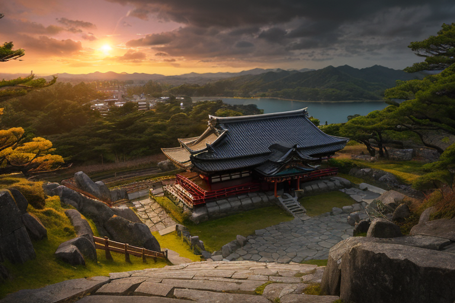
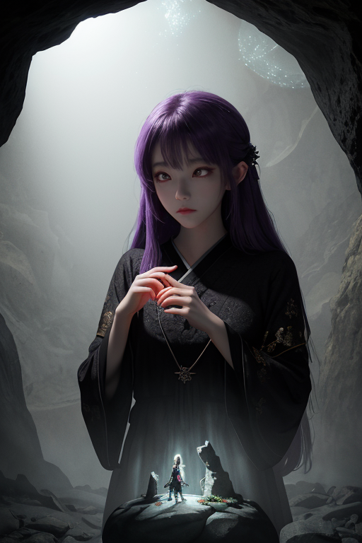
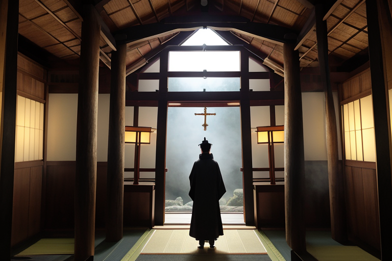
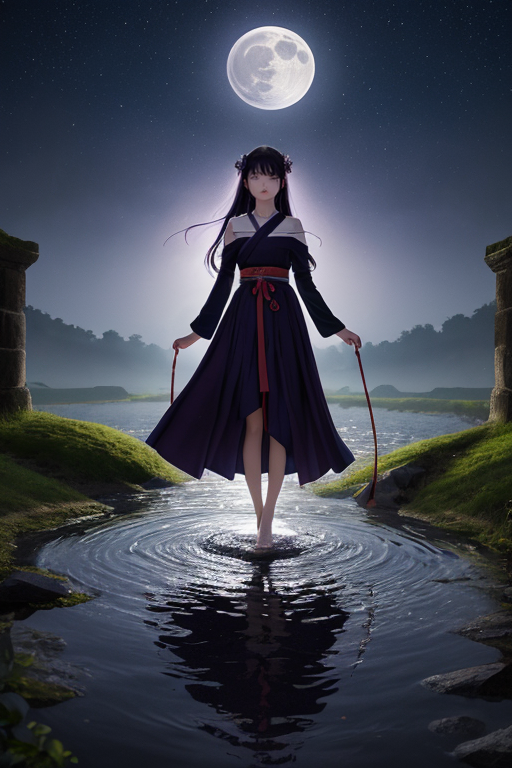
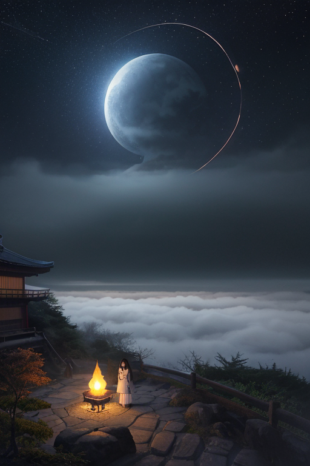

第一章 現実の島根
あなたはまだ気づいていない。この土地にも、王がいることを。
出雲大社の巨大な注連縄の下、空気は重い。それは湿気ではなく、積もった祈りの重さだ。参拝客のざわめきは、この静謐を破ることはない。むしろ、そのざわめきこそが、古くから続く「何か」の表面を、かすかに揺らしているに過ぎない。島根は、そういう土地である。石見銀山の坑道の奥には、鉱石を穿った無数の痕跡が、長い時間の沈黙を刻んでいる。松江城天守から宍道湖を望めば、夕陽が水を染め、今日という一日が、無数の昨日たちの縁に静かに重なる。
ここでは、すべてが結ばれ、そして封じられている。出雲そばを啜る音、日本海でしじみを獲る網のきしみ、足立美術館の庭の苔が呼吸する微かな湿気――どれもが、目には見えない「縁」の糸で繋がれ、ほどけない結び目を作っている。神在月（かみありづき）に訪れる八百万の神々の気配は、今は地中深く、あるいは人々の営みの隙間に、ごく僅かな振動として眠っているだけだ。この土地の歪みは、目立たない。ゆっくりと、確実に、縁が絡み、絞られ、何かを縛り続けているその緊張の、静かなる不穏さなのである。

第二章「歪みの兆候」
石見銀山の坑道の奥、人が立ち入らなくなった支坑で、岩肌に埋め込まれた古い結界の勾玉が、微かに温もりを帯びていた。それは封印線の要であり、この土地に眠る「古き神々の縁」を静かに縛り続ける楔であるはずだった。妖精イズモナがその前で立ち止まり、細い指で空気を撫でる。無数の、目に見えない「縁」の糸が、勾玉を中心に蜘蛛の巣のように張り巡らされ、震えている。震えは昨日までになかったものだ。
「結び目が緩み始めています」イズモナの声は坑道の湿った闇に吸い込まれる。「長い年月、人々が『神話』と信じ、祀り、あるいは忘れてきたすべての縁が、ここに集約されています。その重みに、楔自体が耐えきれなくなっている」
王、イズモリア・ミスティカは松江城天守の最上階から、町を見下ろしていた。人々の日常の縁――出会い、別れ、商い、祈り――それらが織りなす無数の線。その網目のほんの一部が、理由もなく、ふと強く輝いたり、切れそうに細くなったりしている。必然の流れの中に、小さな偶然の乱れが混じり始めている。それは、地盤のごく僅かな沈下よりも、彼にとって由々しき歪みの兆候だった。封じられたものは、まだ目覚めない。だが、縛られた縁そのものが、縛り手を締め上げ始めている。

第三章 王の葛藤
出雲大社の巨大な注連縄の下、イズモリアは目を閉じていた。掌に浮かぶ紫と金の紋章は、周囲に漂う無数の「縁」の糸を映し出している。その幾筋かが、今、異常な張りを見せていた。石見銀山の坑道で働く男と、松江城下でそばを打つ女。本来、交わるはずのない二本の糸が、不自然に引き寄せられ、絡まり始めている。妖精ミスティラが囁く。「あの坑道の僅かな亀裂。彼が今日、通常とは違う路を選べば、避けられる。しかしそのためには、彼と彼女の縁を、こちら側で一度、切り離さねばなりません」
必然か。偶然か。王の役目は歪みの調整だ。地盤の沈下を緩め、人々の運命の糸が不自然に絡まるのを防ぐ。だが、この引き寄せは何か。封じられた神々の残滓が、自らの復活のための「縁」を、無意識に紡ごうとしているのか。それを断つことは、調整か、それとも干渉か。イズモリアの胸に、かつてない重さがのしかかる。感情という歪みが、彼に確かな苦悩をもたらしていた。

第四章 妖精との対話
松江城天守閣の陰、堀の水面に映る月が、二重に揺れていた。ミスティラはその傍らに佇み、声を潜めて語り始めた。
「この国は、神々が去った地です。出雲の神々は、目に見えぬ約束事によって、高天原へと移されました。『封印』とは、そういうもの。力そのものを消すのではなく、その発現を、この世界の理に従わせるための『縁の調整』です」
イズモリアは黙って聞く。彼女の言葉は、石見銀山の坑道のように、古く深い真実へと続いている。
「今、起こりつつある引き寄せは、封印の綻びです。古い神々の残響が、復活のための『必然の縁』を、無理矢理紡ごうとしている。しかし、王よ」ミスティラの目が、水面の月のように冴える。「我々が日々調整している人々の出会いや別れ、それは『偶然の縁』。無数の選択が織りなす、儚くも尊いもの。古い神々が求める必然は、その偶然の積み重ねを、否定するものです」
必然か偶然か。問いは、王自身の内側に深く根を下ろしていた。彼が断とうとする一本の縁は、果たして、調整すべき歪みなのか。それとも――。

第五章「微調整と余韻」
松江城天守の最上層から、島根半島の夜を見下ろす。王は、自らの内に深く根付いた問いを、静かに手放した。必然か偶然か。その答えは、今、必要ではない。必要なのは、古い神々の求める「必然の縁」という強固な歪みを、今ここで、微調整することだけだった。
彼は目を閉じ、王国の紋章を思い浮かべる。紫と金の勾玉が、無数の結環で繋がる。ミスティラの縁結び波、イズモナの縁波操作。全ての力を、一点へ集中させる。対象は、出雲大社の地下深く、岩盤に刻まれた古い神々の「契約」。それを、ほんの少し、書き換える。強制された必然を、無数の偶然が寄り集まる「流れ」へと緩める。石見銀山の坑道から、隠岐の島の潮騒まで、王国全土の妖精たちの力が王へと注がれる。
微調整は、痛みを伴った。古い契約の抵抗は激しく、王の体は勾玉のように冷たく震える。しかし、彼は耐えた。足立美術館の庭の静寂、出雲そばをすする日常の音、しじみ漁の朝もや。守るべき偶然の積み重ねを、一つ一つ、心に灯しながら。
やがて、抵抗は消えた。歪みは調整された。古い神々の声は、怒りではなく、どこか諦観に満ちたため息へと変わっていく。王は天守の欄干に手をかけ、深く息を吸う。神在月が終わり、人々はまた、偶然の出会いと別れを繰り返す。それでいい。
代償は、ゆっくりと訪れるだろう。彼自身が、より深く「縁」に囚われていく予感。しかし、今はこの静かな夜の余韻だけを感じていた。微調整の後には、いつも、深い静寂が残る。
あなたの町にも、王がいる。